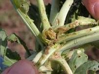
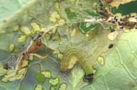
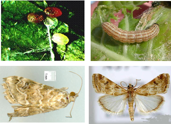

| Home |
| CRUCIFEROUS VEGETABLES |
MAJOR PESTS |
| 1. Diamond back moth |
| 2. Leaf webber |
| 3. Cabbage semilooper |
| 4. Cabbage butterfly |
| 5. Cabbage borer |
| 6. Mustard sawfly |
| 7. Cabbage aphid |
| 8. Cabbage flea beetle |
| Questions |
| Download Notes |
CRUCIFEROUS VEGETABLES :: MAJOR :: CABBAGE BORER
5. Cabbage borer: Hellula undalis (Pyraustidae: Lepidoptera)
Distribution and status: Worldwide, this is sporadic but occasionally serious
Host range: cabbage, cauliflower, radish, knoll-khol, beet root and the weed Gynadropis pentaphylla
Damage symptoms
Larva aborts head formation. Caterpillars first mine the leaves later feed on leaves, shoots sheltered within silken passage and finally bore into the stems. They prevent head initiation causing multiple shoots or heads.
|  |  |
Bionomics
|  |
Female moth lays oval shaped eggs singly or in clusters on the undersurface of the leaves or some other parts of the plant. Eggs are pearly white when laid which turns pink next day and latere brown. Egg period 2-3 days. Larva: Pale whitish-brown in colour with 4-5 purplish brown longitudinal stripes. Larval period 7-17 days. Pupa is a cocoon. Pupal period 6 days. Adult: Pale greyish brown. Forewings have grey wavy lines, a pale apical spot and pale edged dark moon shaped (lunule), hind wings pale dusky with slight fuscous suffusion on apical area. Life cycle is completed in 15-25 days.
Management
Same as for leaf webber